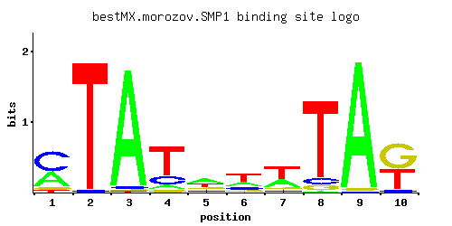

SMP1
YBR182C
Putative transcription factor involved in regulating the response to osmotic stress; member of the MADS-box family of transcription factors
Best-performing DNA-binding model.

View and copy the recommended matrices ↘
A | 0.364 0.003 0.960 0.092 0.426 0.251 0.324 0.009 0.974 0.009 C | 0.529 0.019 0.022 0.191 0.135 0.153 0.090 0.073 0.004 0.058 G | 0.063 0.002 0.011 0.056 0.161 0.118 0.097 0.058 0.018 0.531 T | 0.044 0.976 0.008 0.661 0.278 0.479 0.489 0.860 0.003 0.402
A | 36 0 96 9 42 25 32 0 97 0 C | 52 1 2 19 13 15 9 7 0 5 G | 6 0 1 5 16 11 9 5 1 53 T | 4 97 0 66 27 47 48 86 0 40
A | 0.13 -4.67 1.10 -1.25 0.29 -0.24 0.01 -3.57 1.11 -3.57 C | 1.08 -2.25 -2.10 0.06 -0.29 -0.16 -0.69 -0.90 -3.81 -1.13 G | -1.05 -4.50 -2.80 -1.17 -0.11 -0.42 -0.62 -1.13 -2.30 1.08 T | -1.98 1.12 -3.69 0.73 -0.14 0.40 0.42 0.99 -4.67 0.23
Alternative candidate matrices 6
Historical matrix candidates from the original ScerTF database. Expand a source to inspect its original logo, scores, and matrix values.
SMP1Foat et. al.P = 2.81e-10View matrix ↘
SMP1Harbison et. al.P = 0.002823View matrix ↘
SMP1Macisaac et. alP = 0.002823View matrix ↘
SMP1Zhu J and MQ ZhangP = 1.25e-09View matrix ↘
SMP1Zhu et. al.P = 1View matrix ↘
SMP1Zhao and StormoP = 1View matrix ↘
Gene-level annotations and interactions.
Genes bound in ChIP-chip experiments 181 genes
YAL022C, YBL001C, YBL037W, YBL087C, YBL106C, YBL109W, YBL111C, YBL112C, YBL113C, YBR057C, YBR181C, YBR182C, YBR183W, YBR188C, YBR189W, YBR190W, YBR191W, YBR298C, YBR299W, YCR073C, YDL060W, YDL061C, YDL075W, YDL076C, YDR048C, YDR309C, YDR342C, YDR350C, YDR351W, YDR366C, YDR368W, YDR418W, YDR420W, YDR500C, YDR501W, YDR543C, YDR544C, YDR545W, YEL040W, YEL054C, YER001W, YER011W, YER074W, YER132C, YFL063W, YFL064C, YFL065C, YFR031C-A, YGL030W, YGL031C, YGL077C, YGL115W, YGL134W, YGL135W, YGL136C, YGL259W, YGR117C, YGR118W, YGR143W, YGR190C, YGR282C, YGR283C, YHL027W, YHL034C, YHL041W, YHR021C, YHR021W-A, YHR030C, YHR080C, YHR081W, YHR087W, YHR091C, YHR193C, YHR194W, YHR195W, YIL015C-A, YIL122W, YIL133C, YIL174W, YIL175W, YIR013C, YIR014W, YIR020C, YIR039C, YJL039C, YJL189W, YJL190C, YJL191W, YJL192C, YJL225C, YJR044C, YJR100C, YJR158W, YKL096W, YKL163W, YKL164C, YKL180W, YKL185W, YKL186C, YKR102W, YKR105C, YKR106W, YLL065W, YLR047C, YLR048W, YLR074C, YLR075W, YLR105C, YLR287C, YLR300W, YLR332W, YLR368W, YLR387C, YLR388W, YLR389C, YLR390W, YLR390W-A, YLR392C, YLR393W, YLR394W, YLR413W, YLR463C, YLR465C, YLR467W, YML026C, YML111W, YML132W, YML133C, YMR013C, YMR014W, YMR015C, YMR165C, YMR251W-A, YNL065W, YNL066W, YNL087W, YNL097C, YNL113W, YNL115C, YNL145W, YNL236W, YNL288W, YNL302C, YNL337W, YNL338W, YNL339C, YNR050C, YOL077W-A, YOL078W, YOL080C, YOL121C, YOR134W, YOR137C, YOR138C, YOR140W, YOR236W, YOR268C, YOR269W, YOR318C, YOR319W, YOR323C, YOR325W, YOR369C, YPL018W, YPL019C, YPL050C, YPL059W, YPL060C-A, YPL090C, YPL143W, YPL175W, YPL176C, YPL192C, YPL198W, YPL251W, YPL253C, YPL257W-A, YPL257W-B, YPL283C, YPR124W, YPR198W
Genes affected by TF deletion 24 genes
YHL014C, YPL046C, YPL016W, YBR066C, YDR468C, YDL188C, YJR146W, YMR133W, YAR062W, YDR281C, YBL093C, YER089C, YKL148C, YLR234W, YIL097W, YNL197C, YKL188C, YHR136C, YMR251W, YBR053C, YBL106C, YBR023C, YMR034C, YBR182C
Genes supported by both experiments 2 genes
YBL106C, YBR182C